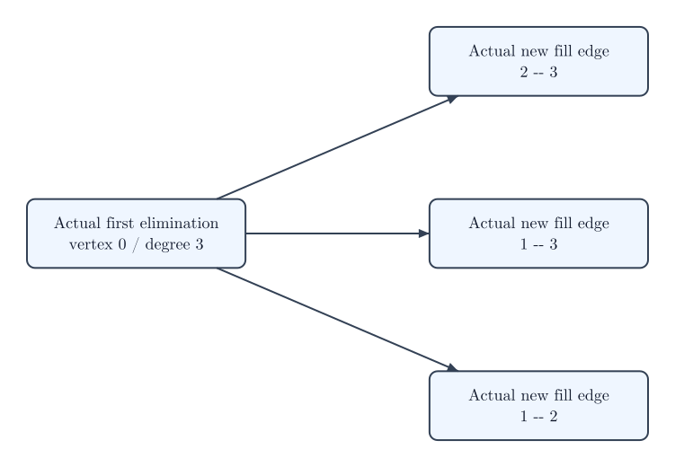
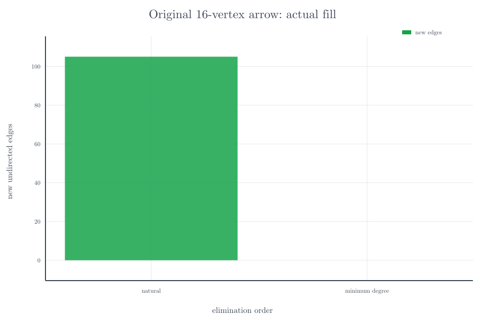
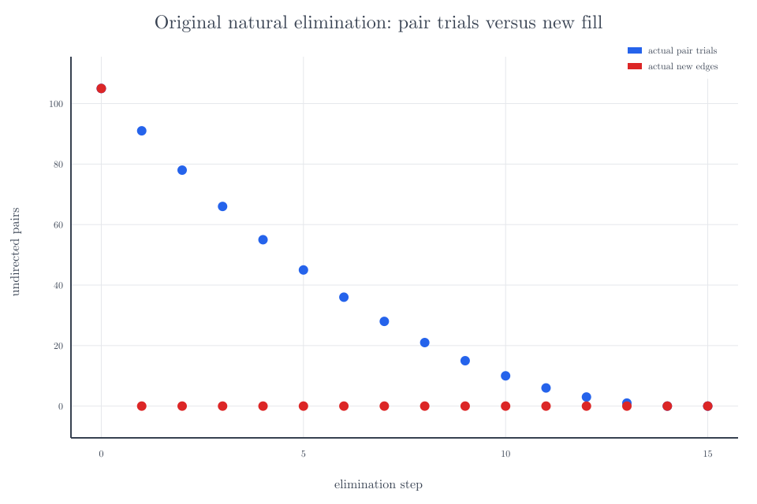
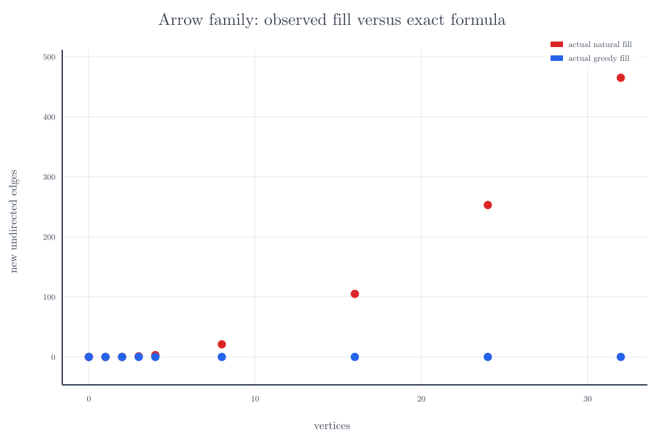

Minimum-degree elimination
Abstract
Eliminating a variable from a sparse symmetric matrix can couple previously uncoupled neighbors and create new nonzeros. We trace those new graph edges, compare natural and minimum-current-degree orders on the original arrow example, and explain why a local degree heuristic does not certify globally minimum fill. All symbolic decisions come from the canonical elimination producer.
Elimination is a clique operation
For a symmetric positive-definite matrix, eliminating vertex v couples its remaining neighbors through the Schur complement. The symbolic graph therefore completes that neighbor set to a clique and removes v. This predicts potential nonzeros; numeric cancellations can make an actual entry zero. With d live neighbors there are d(d−1)/2 pair trials, but only previously missing edges are fill.
Minimum degree chooses the smallest live degree and breaks ties by the smallest vertex ID. It bounds immediate pair trials locally. Existing edges, future eliminations and ties affect total fill, so minimum degree does not minimize either immediate missing edges or global fill exactly.
A three-leaf star by hand
The small graph has center0 and leaves1,2,3. Natural order eliminates0 first, inserting all three leaf-to-leaf edges. Minimum degree first chooses1, then2, then0, then3, creating no fill. The diagram uses the actual first natural-order fill records. A four-node example is sufficient to see why eliminating a dense center can be costly.
#include <dm/dm.hpp>
int main() {
std::filesystem::create_directories("build");
auto a = dm::algorithms::minimum_degree_arrow(4);
auto t =
dm::algorithms::elimination_trace(a,
dm::algorithms::elimination_natural_order(4));
auto g = dm::algorithms::minimum_degree_trace(a);
dm::graphics::Diagram d;
d.node("v", {0, 3},
std::format("Actual first elimination\nvertex {} / degree {}",
t.steps.front().vertex, t.steps.front().neighbors.size()));
for (std::size_t k = 0; k < t.steps.front().fill.size(); ++k) {
auto[u, v] = t.steps.front().fill[k];
auto id = std::to_string(k);
d.node(id, {7, double(k) * 3},
std::format("Actual new fill edge\n{} -- {}", u, v)).edge(
"v", id);
}
std::print("Natural fill: {}. Greedy fill: {}.\n\n| step | natural vertex | natural new fill | greedy " "vertex | greedy new fill |\n| ---: | ---: | ---: | ---: | ---: |\n",
t.fill_edges, g.fill_edges);
for (std::size_t k = 0; k < t.order.size(); ++k)
std::print("| {} | {} | {} | {} | {} |\n", k, t.order[k],
t.steps[k].fill.size(), g.order[k], g.steps[k].fill.size());
d.save_svg("build/degree_tiny.svg");
}Natural fill: 3. Greedy fill: 0.
| step | natural vertex | natural new fill | greedy vertex | greedy new fill |
|---|---|---|---|---|
| 0 | 0 | 3 | 1 | 0 |
| 1 | 1 | 0 | 2 | 0 |
| 2 | 2 | 0 | 0 | 0 |
| 3 | 3 | 0 | 3 | 0 |

Retain the original sixteen-vertex arrow
The original example has center0 adjacent to fifteen leaves. Natural order inserts all105 missing leaf pairs on its first step. Minimum degree removes leaves and creates zero fill. In exact symbolic Cholesky, counting the diagonal, these orders predict136 and31 factor entries respectively: n plus the original undirected edge count plus fill. This identity counts structural entries, not numerical flops or measured storage bytes.
#include <dm/dm.hpp>
int main() {
std::filesystem::create_directories("build");
auto a = dm::algorithms::minimum_degree_arrow();
auto natural =
dm::algorithms::elimination_trace(a,
dm::algorithms::elimination_natural_order(16));
auto greedy = dm::algorithms::minimum_degree_trace(a);
std::print("| original order | actual fill edges | symbolic factor entries incl diagonal |\n| --- | " "---: | ---: |\n| natural | {} | {} |\n| minimum degree | {} | {} |\n\nActual greedy " "permutation:",
natural.fill_edges, 31 + natural.fill_edges, greedy.fill_edges,
31 + greedy.fill_edges);
for (auto v : greedy.order)
std::print(" {}", v);
std::print(".\n");
auto p =
dm::graphics::RPlot::barplot({double(natural.fill_edges),
double(greedy.fill_edges)},
{"natural", "minimum degree"}, "new edges");
p.title("Original 16-vertex arrow: actual fill").x_label("elimination order").y_label("new undirected edges").save_svg("build/degree_original.svg");
}| original order | actual fill edges | symbolic factor entries incl diagonal |
|---|---|---|
| natural | 105 | 136 |
| minimum degree | 0 | 31 |
Actual greedy permutation: 1 2 3 4 5 6 7 8 9 10 11 12 13 14 0 15.

Where the fill enters
For the original graph all105 natural-order fill edges enter at the first elimination. Later elimination steps still perform clique pair trials on the dense remaining graph even when no new edge is inserted. The next figure separates observed pair trials from actual new edges. These counts explain work more precisely than calling all neighbor pairs fill.
#include <dm/dm.hpp>
int main() {
std::filesystem::create_directories("build");
auto t =
dm::algorithms::elimination_trace(dm::algorithms::minimum_degree_arrow(),
dm::algorithms::elimination_natural_order(16));
std::vector<double> x, trials, fill;
std::print("| step | eliminated | live degree | pair trials | new fill |\n| ---: | ---: | ---: | ---: | " "---: |\n");
for (std::size_t k = 0; k < t.steps.size(); ++k) {
auto &s = t.steps[k];
auto d = s.neighbors.size();
auto pairs = d ? d * (d - 1) / 2 : 0;
x.push_back(k);
trials.push_back(pairs);
fill.push_back(s.fill.size());
std::print("| {} | {} | {} | {} | {} |\n", k, s.vertex, d, pairs,
s.fill.size());
}
auto p = dm::graphics::RPlot::create();
p.points(x, trials, "actual pair trials", {37, 99, 235}, 6).points(
x, fill, "actual new edges", {220, 38, 38}, 6).title(
"Original natural elimination: pair trials versus new fill").x_label(
"elimination step").y_label("undirected pairs").save_svg(
"build/degree_steps.svg");
}| step | eliminated | live degree | pair trials | new fill |
|---|---|---|---|---|
| 0 | 0 | 15 | 105 | 105 |
| 1 | 1 | 14 | 91 | 0 |
| 2 | 2 | 13 | 78 | 0 |
| 3 | 3 | 12 | 66 | 0 |
| 4 | 4 | 11 | 55 | 0 |
| 5 | 5 | 10 | 45 | 0 |
| 6 | 6 | 9 | 36 | 0 |
| 7 | 7 | 8 | 28 | 0 |
| 8 | 8 | 7 | 21 | 0 |
| 9 | 9 | 6 | 15 | 0 |
| 10 | 10 | 5 | 10 | 0 |
| 11 | 11 | 4 | 6 | 0 |
| 12 | 12 | 3 | 3 | 0 |
| 13 | 13 | 2 | 1 | 0 |
| 14 | 14 | 1 | 0 | 0 |
| 15 | 15 | 0 | 0 | 0 |

Check a closed form across graph sizes
For an n-vertex arrow, natural order inserts(n−1)(n−2)/2 edges when n is at least2, and zero for smaller graphs. Greedy minimum degree creates none for every size. The prescribed finite sweep checks those exact claims using the library's own generator and actual fill counts. It does not establish a universal advantage on arbitrary graphs.
The simple implementation scans all vertices for each choice and uses ordered sets for clique insertion. A coarse worst-case bound is O(n cubed log(n+1)) work and O(n squared) driver storage. This is the explicit graph heuristic, not an approximate minimum-degree quotient-graph implementation. The trace additionally stores every admitted input row/reference, order ID, step, live-neighbor ID and new fill edge. Default cap is1000000 entries; zero disables it. Admission throws before exceeding the cap and returns no partial trace.
#include <dm/dm.hpp>
int main() {
std::filesystem::create_directories("build");
std::vector<double> x, natural, greedy;
std::print("| vertices | natural actual fill | natural formula | greedy actual fill |\n| ---: | ---: | " "---: | ---: |\n");
for (int n : {0, 1, 2, 3, 4, 8, 16, 24, 32}) {
auto a = dm::algorithms::minimum_degree_arrow(n);
auto t =
dm::algorithms::elimination_trace(a,
dm::algorithms::elimination_natural_order(n));
auto g = dm::algorithms::minimum_degree_trace(a);
int formula = n >= 2 ? (n - 1) * (n - 2) / 2 : 0;
x.push_back(n);
natural.push_back(t.fill_edges);
greedy.push_back(g.fill_edges);
std::print("| {} | {} | {} | {} |\n", n, t.fill_edges, formula,
g.fill_edges);
}
auto p = dm::graphics::RPlot::create();
p.points(x, natural, "actual natural fill", {220, 38, 38}, 6).points(
x, greedy, "actual greedy fill", {37, 99, 235}, 6).title(
"Arrow family: observed fill versus exact formula").x_label("vertices").y_label("new undirected edges").save_svg("build/degree_scaling.svg");
}| vertices | natural actual fill | natural formula | greedy actual fill |
|---|---|---|---|
| 0 | 0 | 0 | 0 |
| 1 | 0 | 0 | 0 |
| 2 | 0 | 0 | 0 |
| 3 | 1 | 1 | 0 |
| 4 | 3 | 3 | 0 |
| 8 | 21 | 21 | 0 |
| 16 | 105 | 105 | 0 |
| 24 | 253 | 253 | 0 |
| 32 | 465 | 465 | 0 |

Contracts, conclusion and references
The graph API rejects out-of-range vertex IDs. It ignores loops and duplicate references and interprets asymmetric lists as their symmetric union. Fixed-order analysis requires a complete permutation. Empty graphs are valid. Results own the original lists, including raw duplicates, plus actual decisions. The ordinary ordering preserves legacy choices on symmetric valid graphs. No numeric matrix, definiteness test or cancellation analysis is performed.
The small star and original arrow explain the observed savings through actual fill events. They support this graph-family comparison while leaving global minimum-fill and runtime claims open.
Tinney and Walker, Direct solutions of sparse network equations by optimally ordered triangular factorization (1967) gives historical sparse-ordering context. The explicit set implementation and smallest-ID tie rule describe this checkout.
Verification
The ten-report batch passes95 CTest cases,31 directly instrumented ASan/UBSan
cases,83 compiled and executed public examples,363/363 scoped documentation
definitions and ten representative hovers. Independent Python integer
arithmetic, MT19937-64/variation replay, graph sets, analytic interpolation,
circle boundary enumeration and actual-sample integration reconstruction agree
on915459 captured records. All six original RMS summaries are separately checked
using96 native MISER estimates and1600000 independently reproduced
plain-comparator points. Frozen valid-input comparisons include the original
seeded solver paths and full MOEA/D fronts. Ten checkout headers and ten
identically installed development headers compile independently, and an
installed-header native consumer links and runs. Each report has four executed
complete programs, four reviewed native figures and both HTML/Markdown exports
with computed-result and image-byte checks. This is a scoped native API audit,
not an installation claim for every language binding. Receipts:
build/mepml-conversion/batch-234-243/.